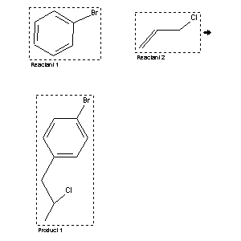

|  |
| FA | RX(1); FLST(1); RX(1) |
Reaction (1 of 1)
| Reaction ID | 8117238 |
| Reactant BRN | 1236661; 635704 |
| Reactant | bromobenzene; 3-chloro-propene |
| Product BRN | 3240558 |
| Product | (+-)-2-bromo-1-<2-chloro-propyl>-benzene; 1-bromo-4-(2-chloro-propyl)-benzene |
| No. of Reaction Details | 1 |
Reaction Details (1 of 1)
| Reaction Classification | Preparation |
| Reagent | FeCl3 |
| Temperature | -21 - -16 |
| Comment | Handbook |
| Citation Pointer | 1564781; Journal; Patrick; McBee; Hass; JACSAT; J.Amer.Chem.Soc.; 68; 1946; 1009; |
Reference (1 of 1)
| Citation Number | 1564781 |
| Document Type | Journal |
| Authors | Patrick; McBee; Hass |
| CODEN | JACSAT |
| Journal Title | J.Amer.Chem.Soc. |
| (Series) Volume | 68 |
| Publication Year | 1946 |
| Page | 1009 |